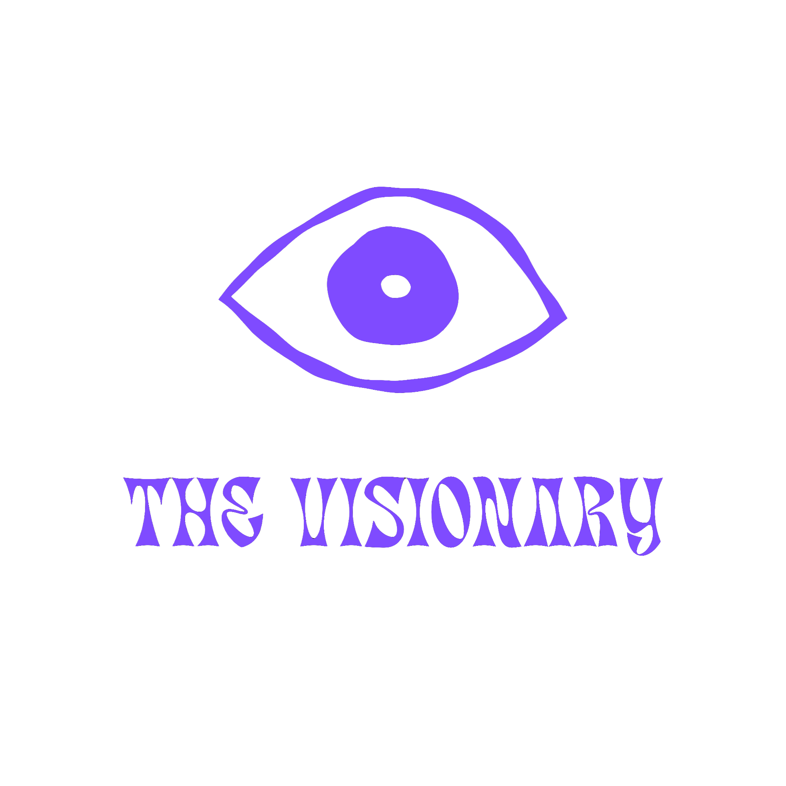

While others chase the ball, the Visionary is already where it is going.
Animal: Owl
Defined by the quality of its observation. It doesn't move until it has studied the environment, tracking the smallest shifts. It sees the field not as it is, but as it's about to be.
How It Moves
The Visionary is always in the right place, and you rarely see them run to get there. They read patterns before they fully form, anticipating space and passing lanes that haven't opened yet. Calm, observant, and a step ahead, they experience the game through what's about to happen rather than what already has.
Why This Formation — 1-3-5-2
Wide enough to stretch a defense and deep enough in midfield to create a mental canvas, asking the opponent a question before the ball even moves.
At Its Best
A quiet awareness that keeps the whole team's rhythm arriving one beat before it's needed.